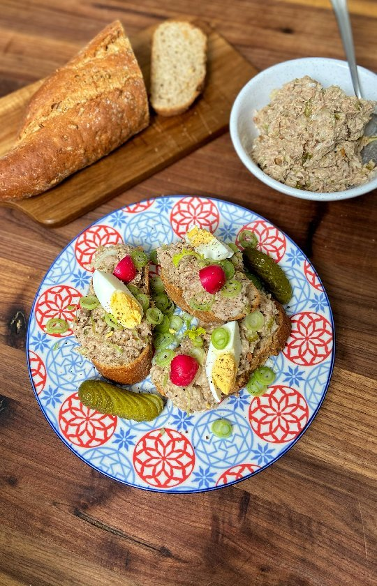

Mäsová pomazánka — Normy Jedál
Už jsme si s Martinem Škodou ukázali spoustu báječných českých receptů. 🥧 Dnes tu ale máme jedinečný recept a to z důvodu, že vaříme se zbylým pečeným masem, které nikdo nechce vyhazovat. 👉 Pojďme si z něj udělat dokonalou pomazánku, kterou si jednoduše zamilujete! 💛
📖 Na pomazánku si připravte:
▪️800 g zbytku pečeného nebo vařeného masa (vepřové, hovězí, kuřecí)
▪️1 velká cibule
▪️3 až 4 kyselé okurky
▪️2 lžíce plnotučné hořčice
▪️2 až 3 lžíce majonézy
▪️100 ml výpeku z masa (není nutné)
▪️sůl, pepř
▪️kvasný ocet (dle chuti)
Na servis:
▪️oblíbené pečivo
▪️vejce natvrdo (není nutné)
▪️ředkvičky
▪️svazek jarní cibulky
#martinskoda #masovapomazanka #pomazanka #konecplytvani #pennycz #nakupujtehezkycesky #varimespenny